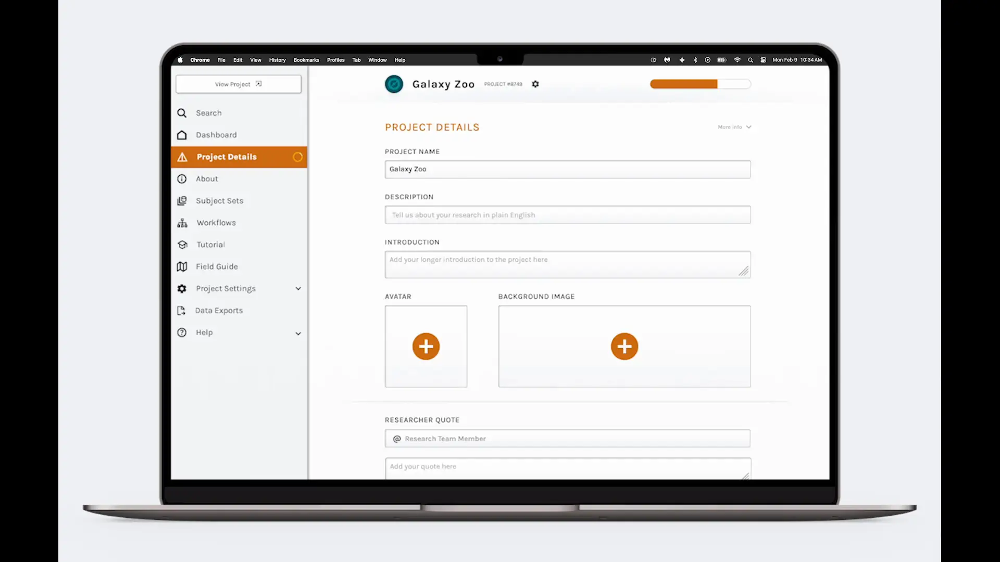
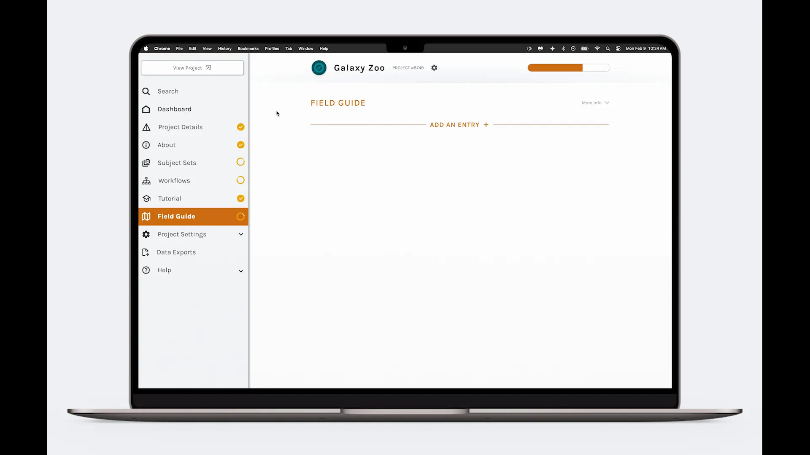

AI-Guided Project Builder
The Challenge
How might we help scientists build better projects faster, without asking them to become UX writers, product managers, or instructional designers?
The Zooniverse Lab is the internal project builder. Research teams use it to create scientific crowdsourcing projects that volunteers then help classify — tagging galaxies, transcribing historical documents, identifying wildlife, and more. These researchers are motivated but infrequent builders. They might create one or two projects over the course of their careers, not dozens.
Setting the Context
The audience's mindset is "I'm a scientist doing this once, carefully." They are not power users iterating daily.
When I began exploring AI integration with the team, it became clear that any AI features needed to feel like a knowledgeable guide, not a productivity boost. Tone, trust, and explainability matter more here than speed.
This case study explains how we redesigned a decade-old tool to meet scientists where they are, and integrated AI in a way that builds trust rather than erodes it.

What Was Broken
Inefficient Workflow Order
Researchers bounced around out of order, often setting up later sections before foundational ones were complete, leading to errors and rework.
Overwhelming and Unsupported
There was no in-product guidance. When researchers got stuck, they had to leave the tool entirely. Every interruption broke momentum and eroded confidence.
Lacked Professional Feel
The interface hadn't been updated since its original launch over a decade ago. Pages were completely unstyled relative to the current Zooniverse design language and had no brand cohesion.
For a platform that sometimes charges research teams for complex or large-scale projects, the experience failed to justify that trust or investment. This created a feedback loop: teams were reluctant to pay for or commit to a tool that felt unfinished, which reduced adoption, which reduced pressure to improve it.

Guiding Principles
To stay aligned across teams and features, we grounded the work in four principles:
The system should lead builders step by step through the process.
AI suggestions must be understandable and explainable.
A clear, logical order lowers cognitive load.
A professional experience reinforces confidence in the platform.
These principles shaped every decision — especially how and where AI was introduced.
Research: Let Experience Be the Guide
I spoke with experienced builders, and observed live project-building sessions to understand how people actually moved through the tool.

There were multiple moments where progress stalled completely. Builders had to leave the system to draft copy, search for formatting guidance, or upload placeholder data just to move on.
I heard:
- "There's no natural flow or guidance. The whole process feels overwhelming."
- "I'm a scientist — I don't know how to write for the general public."
- "I have complex data and I don't know how to communicate that simply."
- "I wish the review process was more seamless and didn't take as long."
I also reviewed other creator tools like Airtable and Squarespace to understand how they walk non-experts through structured creation.
Key Insights
- Researchers lack scaffolding. The barrier is knowing what "good" looks like in this context.
- Empty fields with no guidance kills momentum. No example, no hint, no AI assistance meant builders stalled and left.
- Review delays stemmed from preventable clarity issues. Better upstream writing meant faster downstream approval.

The Solution: An AI-Guided Workflow
Reordered, Narrative Workflow
I restructured the tabs into a story-like progression: define your research goal, describe the task for volunteers, upload and structure your data, configure classification workflows, then prepare for launch. Each section flowed logically from the previous one. Progress indicators clarified where builders were in the journey.

AI as a Guided Writing Partner
Instead of a generic "generate everything" feature, AI was embedded contextually. Researchers could input a short description of their study, target audience, and goals. From there, AI would draft volunteer-facing text and simplify jargon, suggest tutorial or field guide entries based on the task, and flag areas that might confuse non-experts.
Crucially, outputs were just a starting point. The tool provided reasoning hints — for example, "This sentence simplifies terminology for a general audience" — to build trust. Researchers remained in control.

Elevated Visual and Interaction Design
The builder was brought into the current design system with clear hierarchy and branding, contextual help surfaces, and a professional visual tone. The tool now felt aligned with the broader platform and worthy of institutional research.

Usability Testing
I led moderated sessions with both new and experienced builders. Participants were given realistic project-building tasks while I observed their navigation patterns, hesitation points, and questions.
What We Learned
- Reordering the navigation tabs alone reduced task completion time noticeably. Researchers stopped second-guessing the sequence.
- Seeing a progress indicator across the top changed how participants felt about completing the project.
- Participants trusted AI more when they understood its role as a drafting assistant. The AI drafts were frequently edited, but rarely discarded.
"This feels like someone finally thought about how we actually work." — Experienced builder

Launch: What We'll Be Watching
The redesign will launch soon to the full Zooniverse platform. We plan to actively promote the newly redesigned builder — particularly to research teams who previously started a project and abandoned it. Regaining that trust is as important as acquiring new users.
After launch, we will monitor:
- Uptick in projects requesting review — an increase signals that more teams are reaching a build-complete state, which was hard to accomplish with the old tool.
- AI component usage and downstream content quality — are teams using the AI drafting tools, and are those projects arriving at review in better shape?
- Volunteer task performance on AI-assisted projects — do classification accuracy and completion rates remain consistent or improve when instructions were drafted with AI assistance?
- Review cycle length — fewer revision rounds between research teams and the Zooniverse review team would indicate that upstream quality improvements are working.
- Perceived task complexity — through exit surveys, we'll compare how volunteers rate the clarity of instructions on newly built projects versus older ones.
This is a significant update. The project builder has not changed since its original launch over a decade ago. For many researchers, this will be their first experience of Zooniverse — and we'll want to live up to their expectations.
The Outcome
The full impact won't be known until after launch, but the directional signals from testing are encouraging. Researchers who had written off the builder as too frustrating re-engaged when shown the redesigned flow.
The combination of clearer structure, a modernized interface, and AI-assisted content creation addresses the three core failure modes simultaneously.
If the redesign succeeds as intended, the Zooniverse Lab will go from a tool researchers tolerate to one they recommend. The downstream effect is more projects, better volunteer experiences, and higher-quality scientific data — which is, ultimately, the whole point.
There is also a monetization opportunity provided by the redesign. A tiered model becomes viable: a capable free tier for standard projects, and a paid tier that unlocks higher AI usage limits, priority review turnaround, and dedicated support.

Lessons Learned
- Meet experts where they are: Domain expertise in science does not translate to comfort with UX writing or product thinking. Design for the mindset they bring, not the one you assume.
- AI earns trust through restraint: Only use AI to fill in the blanks, then let researchers decide what content remains. Keeping them in control is what makes the feature credible.
- A decade of accumulated debt compounds: Issues in the old builder systematically discouraged the people it was meant to serve. Modernizing the experience required addressing structure, design, and intelligence at the same time.
This project changed how our team thinks about guidance in complex, high-stakes tools. Structure and scaffolding aren't handholding — they're respect for the user's time and expertise.
Good AI doesn't replace the expert. It gives the expert a better starting point.